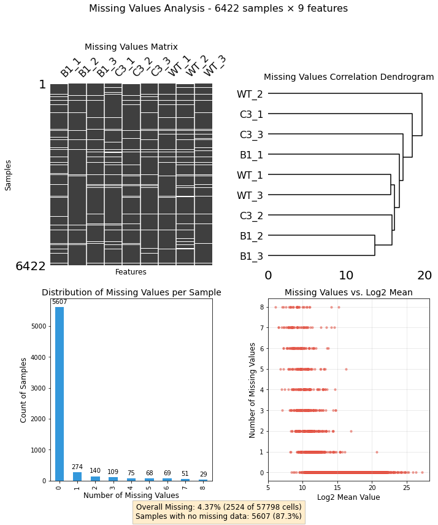
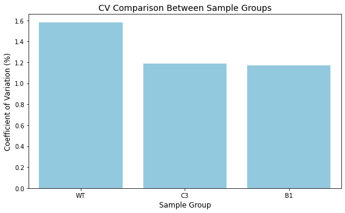
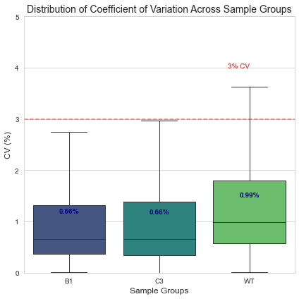
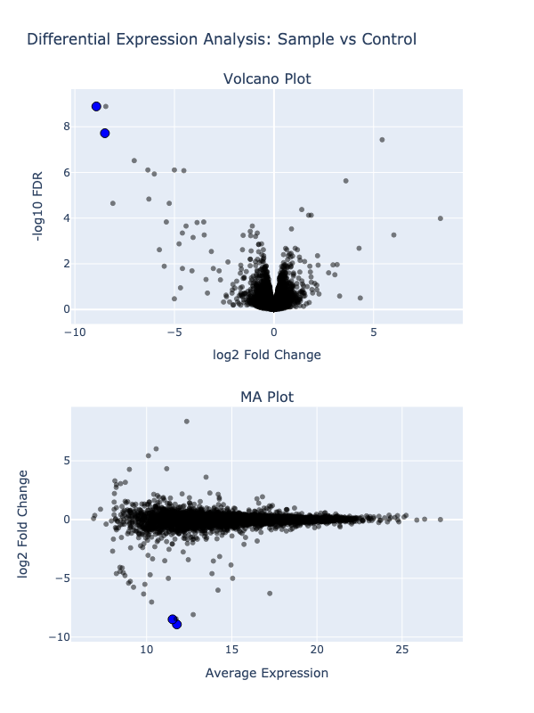

This project is a collection of essential functions and utilities that I frequently use in my data analysis workflows.
Why This Project Exists
As a data analyst, I found myself repeatedly writing the same helper functions across different projects. ProjectUtility centralizes these common utilities into a single, well-documented package that can be easily imported into any analysis.
Documentation
Install ProjectUtility in Development mode
If you are new to using nbdev here are some useful pointers to get you started.
# make sure ProjectUtility package is installed in development mode$ pip install -e .# make changes under nbs/ directory# ...# compile to have changes apply to ProjectUtility$ nbdev_prepare
Can you visualize the pattern of missing values in my dataset?
from ProjectUtility import mis_val_utilityimport pandas as pddf = pd.read_csv('../tests/missing_values/test_df.csv.gz',index_col=[0])mv_analyzer = mis_val_utility.MissingValuesAnalyzer(df)fig, axes, summary = mv_analyzer.plot_missing_dashboard(figsize=(10, 12))
/Users/MTinti/miniconda3/envs/work3/lib/python3.10/site-packages/pandas/core/arrays/masked.py:60: UserWarning: Pandas requires version '1.3.6' or newer of 'bottleneck' (version '1.3.4' currently installed).
from pandas.core import (

🔍 Question
Can you reduce the dimensionality of my dataset to visualize patterns and relationships?
from ProjectUtility import correlation_utilitiesimport numpy as npcv_sample_groups = ['B1', 'B1', 'B1', 'C3', 'C3', 'C3','WT', 'WT', 'WT']analyzer = correlation_utilities.ReplicateAnalyzer( np.log10(df.dropna()), cv_sample_groups)# Calculate coefficient of variationcv_results = analyzer.calculate_coefficient_of_variation()print("Coefficient of Variation Results:")print(cv_results)# Visualize the resultsfig = analyzer.plot_coefficient_of_variation( title="CV Comparison Between Sample Groups", figsize=(8, 5))
Coefficient of Variation Results:
{'WT': 1.5810533161044804, 'B1': 1.17165193540931, 'C3': 1.191373053916986}

Can you do the same row wise?
cv_distribution = analyzer.calculate_cv_distribution(exclude_zeros=True)# Create the CV boxplotprint("\nGenerating CV distribution boxplot...")fig2 = analyzer.plot_cv_boxplot( min_y=0, # Minimum y-axis value max_y=5, # Maximum y-axis value figsize=(6, 6), color_palette="viridis", display_median=True, reference_line=3, title="Distribution of Coefficient of Variation Across Sample Groups")# Show plotsplt.tight_layout()plt.show()
Generating CV distribution boxplot...

🔍 Question
Can you show me an interactive volcan plot?
from ProjectUtility import diff_exprcolumn_mapping = {'log2fc': 'logFC', # logFC column from your data'fdr': 'FDR', # FDR column from your data'avg_intensity': 'log_AveExpr', # log_AveExpr column from your data'id': 'Gene_id', # Gene_acc column from your data'description': 'Desc'# Desc column from your data}file_path ='../tests/volcano_plots/for_web_limma_WT-C3.csv.zip'# Create the PlotData instanceplot_data = diff_expr.PlotData(file_path, column_mapping, highlight_ids=['Blasticidin','Puromycin'])# Quick access to all plotting data_ = plot_data.get_data_for_plotting()
fig = diff_expr.create_volcano_ma_plots( plot_data, plot_title="Differential Expression Analysis: Sample vs Control")
fig.show('iframe')

you can play with the interactive output here: https://mtinti.github.io/ProjectUtility/
🔍 Question
Can you analyse the identification rate of my proteomics sample?
Documentation can be found hosted on this GitHub repository’s pages. Additionally you can find package manager specific guidelines on conda and pypi respectively.